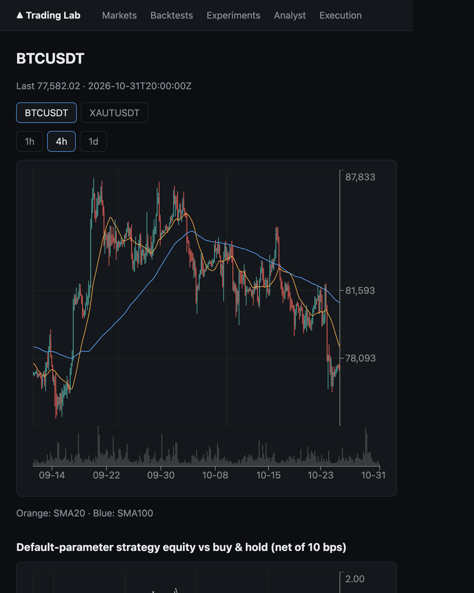
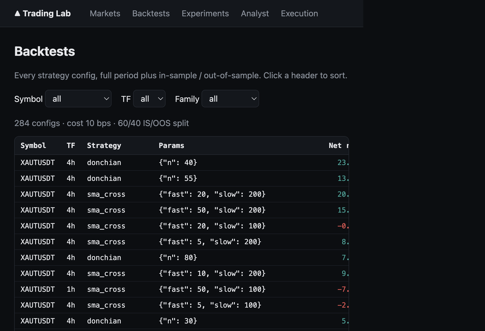
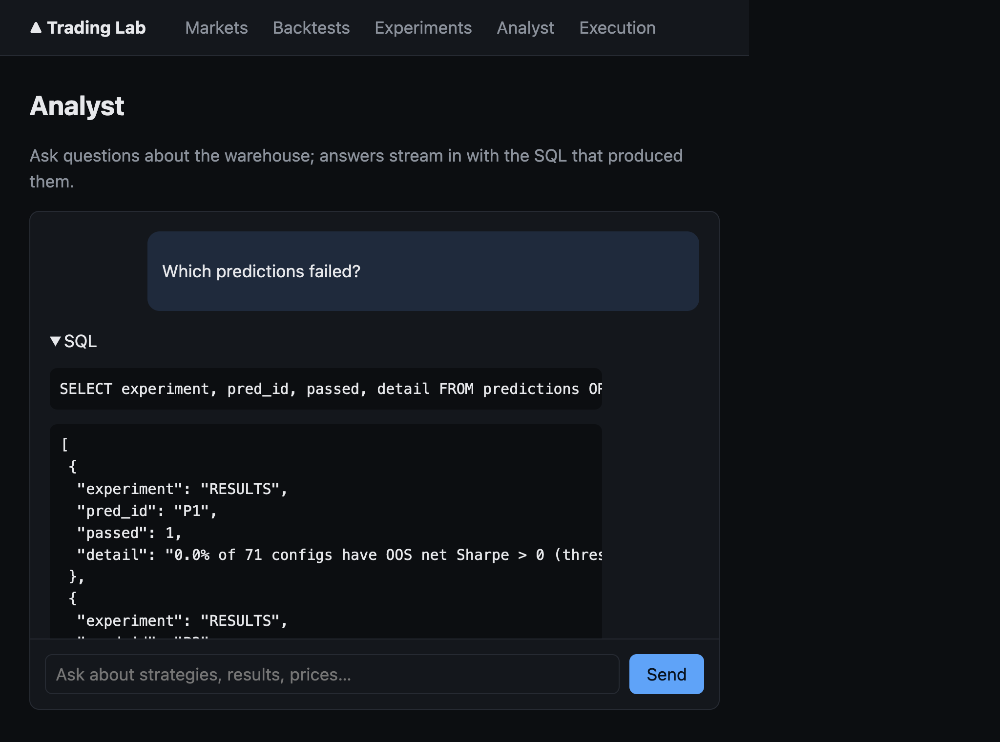

Next.js 15, React 19, TypeScript
App Router pages, server components querying SQL directly, Recharts candlesticks built from a custom bar shape, a sortable dense table, and a streaming chat client that parses SSE by hand.
PROJECT 05 · DATA APP · NEXT.JS + STREAMLIT + SQL
Cost-aware, delay-aware backtests of popular strategies, pre-registered predictions, and an execution pipeline, exposed through a multi-page Next.js site, a Streamlit workbench, and a SQL warehouse that runs on SQLite locally or Snowflake.
Research tooling, not investment advice. The website runs locally and needs Node and a SQL database, so it is shown here with screenshots rather than hosted on this static site.
THE APP



STACK
App Router pages, server components querying SQL directly, Recharts candlesticks built from a custom bar shape, a sortable dense table, and a streaming chat client that parses SSE by hand.
Candles, backtests, equity curves, SSE chat, and an execution-status proxy with timeouts. Inputs are validated against an allowlist before they reach SQL.
One query layer, two backends: set the SNOWFLAKE_* variables and the site queries Snowflake instead of SQLite. The queries use a portable subset (bind parameters, CASE pivots), and DDL ships for both. The Snowflake path is written but untested without an account.
The warehouse builder runs 284 strategy configs across in-sample, out-of-sample, and full periods. The Streamlit app reads the same tables and falls back to the active Snowpark session when deployed in Snowflake.
TradingView webhook, risk gate, task tracker with deduplication and stuck-task detection, and a broker adapter. The site polls its health and status.
Every strategy family is tested with costs, execution delay, block-bootstrap intervals, and a circular-shift null, against predictions written before the test.
WHAT IT FOUND
Across the pre-registered experiments, 21 of 26 predictions held. The substantive finding is negative: with a 10 bps cost, none of 71 textbook configurations on BTC 5-minute data had a positive out-of-sample Sharpe, LazyBear Squeeze Momentum and WaveTrend did not beat a random-timing null, and the Trend Trio was break-even before fees and negative after. Deliberately leaking future data inflated the Trend Trio Sharpe from about 0 to roughly +2.3 to +2.6, which is why the engine separates signal time from fill time.
Gold uses XAUTUSDT, a tokenized-gold proxy with only March to October 2026 of data, so its results are weaker evidence than the BTC runs.